MAXimal
добавлено: 11 Jun 2008 11:17
редактировано: 1 Jun 2009 11:36
Содержание [скрыть]
Ожерелья
Задача "ожерелья" — это одна из классических комбинаторных задач. Требуется посчитать количество различных ожерелий из  бусинок, каждая из которых может быть покрашена в один из
бусинок, каждая из которых может быть покрашена в один из  цветов. При сравнении двух ожерелий их можно поворачивать, но не переворачивать (т.е. разрешается сделать циклический сдвиг).
цветов. При сравнении двух ожерелий их можно поворачивать, но не переворачивать (т.е. разрешается сделать циклический сдвиг).
Решение
Решить эту задачу можно, используя лемму Бернсайда и теорему Пойа. [ Ниже идёт копия текста из этой статьи ]
В этой задаче мы можем сразу найти группу инвариантных перестановок. Очевидно, она будет состоять из перестановок:
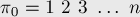
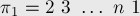
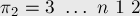
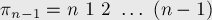
Найдём явную формулу для вычисления 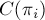. Во-первых, заметим, что перестановки имеют такой вид, что в  -ой перестановке на
-ой перестановке на  -ой позиции стоит 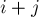 (взятое по модулю , если оно больше ). Если мы будем рассматривать циклическую структуру -ой перестановки, то увидим, что единица переходит в 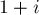, переходит в 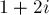, — в 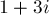, и т.д., пока не придём в число 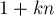; для остальных элементов выполняются похожие утверждения. Отсюда можно понять, что все циклы имеют одинаковую длину, равную 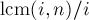, т.е. 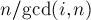 ("gcd" — наибольший общий делитель, "lcm" — наименьшее общее кратное). Тогда количество циклов в -ой перестановке будет равно просто 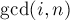.
-ой позиции стоит 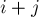 (взятое по модулю , если оно больше ). Если мы будем рассматривать циклическую структуру -ой перестановки, то увидим, что единица переходит в 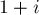, переходит в 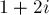, — в 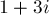, и т.д., пока не придём в число 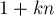; для остальных элементов выполняются похожие утверждения. Отсюда можно понять, что все циклы имеют одинаковую длину, равную 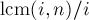, т.е. 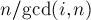 ("gcd" — наибольший общий делитель, "lcm" — наименьшее общее кратное). Тогда количество циклов в -ой перестановке будет равно просто 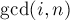.
Подставляя найденные значения в теорему Пойа, получаем решение:
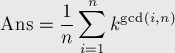
Можно оставить формулу в таком виде, а можно её свернуть ещё больше. Перейдём от суммы по всем к сумме только по делителям . Действительно, в нашей сумме будет много одинаковых слагаемых: если не является делителем , то таковой делитель найдётся после вычисления . Следовательно, для каждого делителя 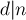 его слагаемое 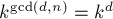 учтётся несколько раз, т.е. сумму можно представить в таком виде:
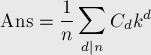
где 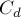 — это количество таких чисел , что 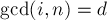. Найдём явное выражение для этого количества. Любое такое число имеет вид: 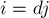, где 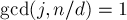 (иначе было бы 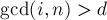 d">). Вспоминая функцию Эйлера, мы находим, что количество таких — это величина функции Эйлера 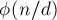. Таким образом, 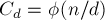, и окончательно получаем формулу:
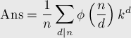